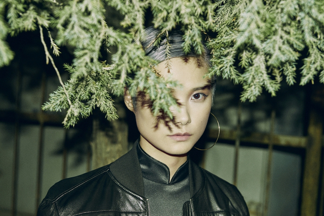
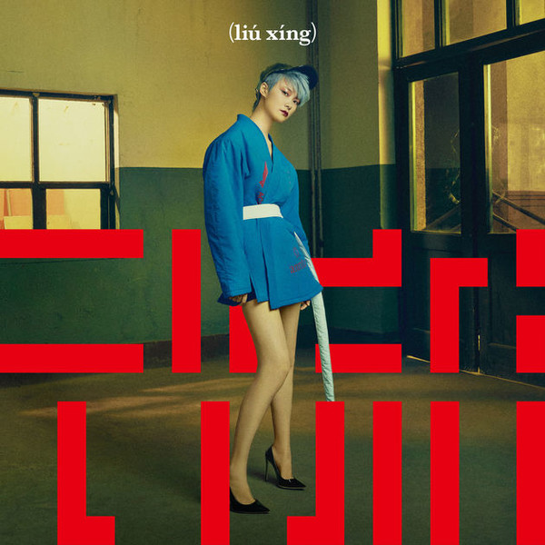

Li Yuchun ( Chinese: 李宇春; pinyin: Lǐ
Yǔchūn; born March 10, 1984), also known by her stage name Chris Lee,
is a Chinese singer, songwriter, DJ and actress.

She launched her singing career by winning first place in the Chinese
singing contest Super Girl, in 2005. The following year, she released
her debut album The Queen and the Dreams. Referred to as the mother of
the unisex look in China, she has achieved mainstream success. She is
also known for her lower mezzo-soprano vocal range, a rarity amongst
Mainland Chinese female singers.
Li was announced the ambassador for Gucci Timepieces and Jewelry in
Asia in Jun 2016. In the same year, Li released her seventh studio
album, Growing Wild. Li broke with tradition by separating the new
album into four EPs. She invited producers she had never worked with
before, like Hsia Yu, Wyman Wong and Chen Weilun. The first EP, Wild,
sold 3 million copies in 16 days after it was released in May of last
year. The three other EPs were then released within six months, with
total sales of more than 6.5 million copies, grossing over 32.8
million yuan ($4.73 million) in 2016. According to Andy Wai Lam Ng,
the vice-president of Tencent Music Entertainment Group, Growing Wild
achieved China's highest digital music sales since the company
released the first Chinese digital album in December 2014.

Li Yuchun became the most popular singer in 2016 on Toutiao, China's
major news and information app for mobile devices,which daily attracts
about 1.27 billion clicks on Videos, and 230 million of them are
relevant to entertainment. In support of the new album, she embarked
on her third concert tour Growing Wild Tour. In the same year, she
featured in the Chinese film, From Vegas to Macau III. She also
featured in the Chinese film, Monster Hunt 2, which was released in
February 2018. In 2021, Li participated in the third season of the
Chinese idol group survival show Youth with You as the main host of
the show, referred to as the Youth PD.